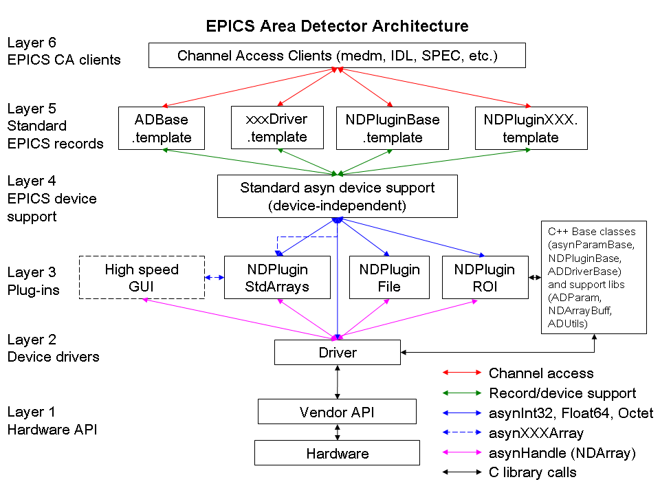
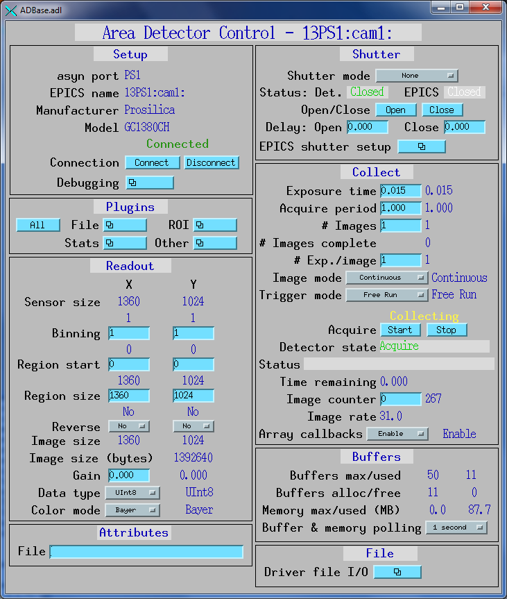
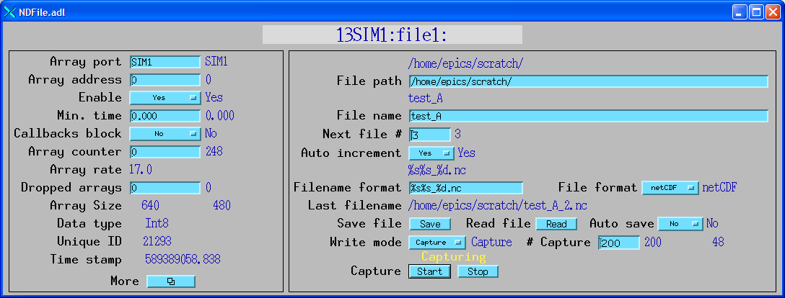

ADEpicsShutter.adl

The areaDetector module provides a general-purpose interface for area (2-D) detectors in EPICS. It is intended to be used with a wide variety of detectors and cameras, ranging from high frame rate CCD and CMOS cameras, pixel-array detectors such as the Pilatus, and large format detectors like the MAR-345 online imaging plate.
The goals of this module are:
The architecture of the areaDetector module is shown below.

From the bottom to the top this architecture consists of the following:
The code in Layers 1-3 is essentially independent of EPICS. There are only 2 EPICS dependencies in this code.
In particular it is possible to eliminate layers 4-6 in the architecture shown in Figure 1, providing there is a programs such as the high-performance GUI shown in Layer 3. This means that it is not necessary to run an EPICS IOC or to use EPICS Channel Access when using the drivers and plugins at Layers 2 and 3.
The plugin architecture is very powerful, because new plugins can be written for application-specific purposes. For example, a plugin could be written to analyze images and find the center of the beam, and such a plugin would then work with any detector driver. Plugins are also powerful because they can be reconfigured at run-time. For example the NDPluginStdArrays can switch from getting its array data from a detector driver to an NDPluginROI plugin. That way it will switch from displaying the entire detector to whatever sub-region the ROI driver has selected. Any Channel Access clients connected to the NDPluginStdArrays driver will automatically switch to displaying this subregion. Similarly, the NDPluginFile plugin can be switched at run-time from saving the entire image to saving a selected ROI, just by changing its input source. Plugins can be used to form an image processing pipeline, for example with a detector providing data to a color convert plugin, which feed an ROI plugin, which feeds a file saving plugin. Each plugin can run in its own thread, and hence in its own core on a modern multi-core CPU.
The use of plugins is optional, and it is only plugins that require the driver to make callbacks with image data. If there are no plugins being used then EPICS can be used simply to control the detector, without accessing the data itself. This is most useful when the vendor provides an API has the ability to save the data to a file and an application to display the images.
What follows is a detailed description of the software, working from the bottom up. Most of the code is object oriented, and written in C++. The parts of the code that depend on anything from EPICS except libCom and asyn have been kept in in separate C files, so that it should be easy to build applications that do not run as part of an EPICS IOC.
The areaDetector module depends heavily on asyn. It is the software that is used for interthread communication, using the standard asyn interfaces (e.g. asynInt32, asynOctet, etc.), and callbacks. In order to minimize the amount of redundant code in drivers, areaDetector has been implemented using C++ classes. The base classes, from which drivers and plugins are derived, take care of many of the details of asyn and other common code.
Detector drivers and plugins are asyn port drivers, meaning that they implement one or more of the standard asyn interfaces. They register themselves as interrupt sources, so that they do callbacks to registered asyn clients when values change. They inherit from the asynPortDriver base C++ class that is provided in the asyn module. That base class handles all of the details of registering the port driver, registering the supported interfaces, and registering the required interrupt sources.
The NDArray (N-Dimensional array) is the class that is used for passing detector data from drivers to plugins. The NDArray class is defined as follows:
#define ND_ARRAY_MAX_DIMS 10
#define ND_SUCCESS 0
#define ND_ERROR -1
/* Enumeration of array data types */
typedef enum
{
NDInt8,
NDUInt8,
NDInt16,
NDUInt16,
NDInt32,
NDUInt32,
NDFloat32,
NDFloat64
} NDDataType_t;
/* Enumeration of color modes */
typedef enum
{
NDColorModeMono,
NDColorModeBayer,
NDColorModeRGB1,
NDColorModeRGB2,
NDColorModeRGB3,
NDColorModeYUV444,
NDColorModeYUV422,
NDColorModeYUV421
} NDColorMode_t;
typedef enum
{
NDBayerRGGB = 0, /* First line RGRG, second line GBGB... */
NDBayerGBRG = 1, /* First line GBGB, second line RGRG... */
NDBayerGRBG = 2, /* First line GRGR, second line BGBG... */
NDBayerBGGR = 3 /* First line BGBG, second line GRGR... */
} NDBayerPattern_t;
typedef struct NDDimension {
int size;
int offset;
int binning;
int reverse;
} NDDimension_t;
typedef struct NDArrayInfo {
int nElements;
int bytesPerElement;
int totalBytes;
} NDArrayInfo_t;
class NDArray {
public:
/* Data: NOTE this must come first because ELLNODE must be first, i.e. same address as object */
/* The first 2 fields are used for the freelist */
ELLNODE node;
int referenceCount;
/* The NDArrayPool object that created this array */
void *owner;
int uniqueId;
double timeStamp;
int ndims;
NDDimension_t dims[ND_ARRAY_MAX_DIMS];
NDDataType_t dataType;
NDColorMode_t colorMode;
NDBayerPattern_t bayerPattern;
int dataSize;
void *pData;
/* Methods */
NDArray();
int initDimension (NDDimension_t *pDimension, int size);
int getInfo (NDArrayInfo_t *pInfo);
int reserve();
int release();
};
An NDArray is a general purpose class for handling array data. An NDArray object is self-describing, meaning it contains enough information to describe the data itself. It is not intended to contain meta-data describing how the data was collected, etc.
An NDArray can have up to ND_ARRAY_MAX_DIMS dimensions, currently 10. A fixed maximum number of dimensions is used to significantly simplify the code compared to unlimited number of dimensions. Each dimension of the array is described by an NDDimension_t structure. The fields in NDDimension_t are as follows:
size is the number of elements in this dimension.offset is the starting element in this dimension relative to the
first element of the detector in unbinned units. If a selected region of the detector
is being read, then this value may be >0. The offset value is cumulative, so
if a plugin such as NDPluginROI further selects a subregion, the offset is relative
to the first element in the detector, and not to the first element of the region
passed to NDPluginROI.binning is the binning (sumation of elements) in this dimension.
The offset value is cumulative, so if a plugin such as NDPluginROI performs binning,
the binning is expressed relative to the pixels in the detector and not to the possibly
binned pixels passed to NDPluginROI.reverse is 0 if the data are in their normal order as read out from
the detector in this dimension, and 1 if they are in reverse order. This value is
cumulative, so if a plugin such as NDPluginROI reverses the data, the value must
reflect the orientation relative to the original detector, and not to the possibly
reversed data passed to NDPluginROI.
The first 3 data fields in the NDArray class, (node, referenceCount, owner)
are used by the NDArrayPool class discussed below. The remaining data fields are
as follows:
uniqueId This should be a number that uniquely identifies this array,
e.g. frame number. Detector drivers should assign this number to the NDArray before
calling the plugins.timeStamp This should be a timestamp value in seconds recording when
the frame was collected. The time=0 reference is driver-dependent because of differences
in vendor libraries. If there is a choice, it is recommended to use timeStamp=0
for Epoch, (00:00:00 UTC, January 1, 1970).ndims The number of dimensions in this array.dims Array of NDDimension_t structures. The array is of length ND_MAX_DIMS,
but only the first ndims values must contain valid information.dataType The data type of this array, one of the NDDataType_t enum
values. The data types supported are signed and unsigned 8, 16, and 32-bit integers,
and 32 and 64-bit floats. colorMode The color mode this array, one of the NDColorMode_t enum
values. The following are the supported color modes:
NDColorModeMono: Monochromatic data, i.e. a single value at each
pixel.NDColorModeBayer: Bayer color. There is a single value at each pixel,
but the pixels have a color filter array in front of them. The supported Bayer filter
is the most common one, a repeating 2x2 array of
Blue Green
Green Red
Transmitting data from the camera using the Bayer format consumes 3 times less bandwidth
than transmitting one of the RGB formats. However, it requires more computation
on the host to convert the data to an RGB format that most clients can display.NDColorModeRGB1: Red, green, blue data with pixel interlace, i.e.
the data array is [3, NX, NY], with the color being the fastest varying array index.NDColorModeRGB2: Red, green, blue data with row interlace, i.e. the
data array is [NX, 3, NY], with the color being the second fastest varying array
index.NDColorModeRGB3: Red, green, blue data with planar interlace, i.e.
the data array is [NX, NY, 3], with the color being the slowest varying array index.NDColorModeYUV444: YUV data with 96 bits for 4 pixels, or 24 bits
per pixel. This is the same number of bits as 8-bit RGB.NDColorModeYUV422: YUV data with 64 bits for 4 pixels, or 16 bits
per pixel. This is 2/3 of the number of bits required for 8-bit RGB.NDColorModeYUV421: YUV data with 48 bits for 4 pixels, or 12 bits
per pixel. This is 1/2 of the number of bits required for 8-bit RGB.bayerPattern The Bayer pattern for this array, one of the NDBayerPattern_t
enum values. This value is only meaningful if colorMode is NDColorModeBayer. The
Bayer pattern values are explained in the comments above. This value is needed because
the Bayer pattern will change when reading out a subset of the chip, for example
if the X or Y offset values are not even numbers.dataSize The size of the memory buffer pointed to by pData
in bytes. This may be larger than the amount actually required to hold the data
for this array.pData Pointer to the memory for this array. The data is assumed to
be stored in the order of dims[0] changing fastest, and dims[ndims-1]
changing slowest.The methods of the NDArray class are:
initDimension This method simply initializes the dimension structure
to size=size, binning=1, reverse=0, offset=0.getInfo. This convenience method returns information about an NDArray,
including the total number of elements, the number of byte per element, and the
total number of bytes in the array.reserve. This method calls NDArrayPool->reserve() for this object.
It increases the reference count for this array.release. This method calls NDArrayPool->release() for this object.
It decreases the reference count for this array.The NDArrayPool class manages a free list (pool) of NDArray objects (described above). Drivers allocate NDArray objects from the pool, and pass these objects to plugins. Plugins increase the reference count on the object when they place the object on their queue, and decrease the reference count when they are done processing the array. When the reference count reaches 0 again the NDArray object is placed back on the free list. This mechanism minimizes the copying of array data in plugins. The public interface of the NDArrayPool class is defined as follows:
class NDArrayPool {
public:
NDArrayPool (int maxBuffers, size_t maxMemory);
NDArray* alloc (int ndims, int *dims, NDDataType_t dataType, int dataSize, void *pData);
NDArray* copy (NDArray *pIn, NDArray *pOut, int copyData);
int reserve (NDArray *pArray);
int release (NDArray *pArray);
int convert (NDArray *pIn,
NDArray **ppOut,
NDDataType_t dataTypeOut,
NDDimension_t *outDims);
int report (int details);
The methods of the NDArrayPool class are:
NDArrayPool This is the constructor for the class. The maxBuffers
argument is the maximum number of NDArray objects that the pool is allowed to contain.
If this value is negative then there is no limit on the number of NDArray objects.
The maxMemory argument is the maxiumum number of bytes of memory the the pool is
allowed to use, summed over all of the NDArray objects. If this value is negative
then there is no limit on the amount of memory in the pool.alloc This method allocates a new NDArray object. The first 3 arguments
are required. ndims is the number of dimensions in the NDArray. dims is an array
of dimensions, whose size must be at least ndims. dataType is the data type of the
NDArray data. dataSize is the number of bytes to allocate for the array data. If
it is 0 then alloc() will compute the size required from ndims, dims, and dataType.
pData is a pointer to a data buffer. If it is NULL then alloc will allocate a new
array buffer. If pData is not NULL then it is assumed to point to a valid buffer.
In this case dataSize must contain the actual number of bytes in the existing array,
and this array must be large enough to hold the array data. alloc() searches its
free list to find a free NDArray buffer. If is cannot find one then it will allocate
a new one and add it to the free list. If doing so would exceed maxBuffers then
alloc() will return an error. Similarly if allocating the memory required for this
NDArray would cause the cumulative memory allocated for the pool to exceed maxMemory
then an error will be returned. alloc() sets the reference count for the returned
NDArray to 1.copy. This method makes a copy of an NDArray object. If the output
array pointer is NULL then it is first allocated. If the output array object already
exists (pOut!=NULL) then it must have sufficient memory allocated to it to hold
the data. If the copyData flag is 1 then the array data is copied. If the copyData
flag is 0 then all array fields except the data itself are copied, and the data
will be initialized to 0.reserve. This method increases the reference count for the NDArray
object. Plugins must call reserve() when an NDArray is placed on a queue for later
processing.release. This method decreases the reference count for the NDArray
object. Plugins must call release() when an NDArray is removed from the queue and
processing on it is complete. Drivers must call release() after calling all plugins.convert This method creates a new output NDArray from an input NDArray,
performing conversion operations. The conversion can change the data type if dataTypeOut
is different from pIn->dataType. It can also change the dimensions. outDims may
have different values of size, binning, offset and reverse for each of its dimensions
from input array dimensions (pIn->dims).report This method reports on the free list size and other properties
of the NDArrayPool object.asynNDArrayDriver inherits from asynPortDriver. It implements the asynGenericPointer functions, assuming that these reference NDArray objects. This is the class from which both plugins and area detector drivers are indirectly derived. Its public interface is defined as follows:
class asynNDArrayDriver : public asynPortDriver {
public:
asynNDArrayDriver(const char *portName, int maxAddr, int paramTableSize, int maxBuffers, size_t maxMemory,
int interfaceMask, int interruptMask);
virtual asynStatus readGenericPointer(asynUser *pasynUser, void *genericPointer);
virtual asynStatus writeGenericPointer(asynUser *pasynUser, void *genericPointer);
virtual void report(FILE *fp, int details);
};
The methods of the asynNDArrayDriver class are:
asynNDArrayDriver This is the constructor for the class. portName,
maxAddr, paramTableSize, interfaceMask and interruptMask are simply passed to the
asynPortDriver base class constructor. asynNDArray creates an NDArrayPool object
to allocate NDArray objects. maxBuffers and maxMemory are passed to the constructor
for the NDArrayPool object.readGenericPointer This method copies an NDArray object from the
asynNDArrayDriver to an NDArray whose address is passed by the caller in the genericPointer
argument. The caller must allocate the memory for the array, and pass the size in
NDArray->dataSize. The method will limit the amount of data copied to the actual
array size or the input dataSize, whichever is smaller.writeGenericPointer This method currently does nothing. Derived classes
must implement this method as required.report This method calls the report function in the asynPortDriver
base class. It then calls the NDArrayPool->report() method if details >5.ADDriver inherits from asynNDArrayDriver. This is the class from which area detector drivers are directly derived. Its public interface is defined as follows:
class ADDriver : public asynNDArrayDriver {
public:
ADDriver(const char *portName, int maxAddr, int paramTableSize, int maxBuffers, size_t maxMemory,
int interfaceMask, int interruptMask);
/* These are the methods that we override from asynPortDriver */
virtual asynStatus drvUserCreate(asynUser *pasynUser, const char *drvInfo,
const char **pptypeName, size_t *psize);
/* These are the methods that are new to this class */
virtual asynStatus writeInt32(asynUser *pasynUser, epicsInt32 value);
int createFileName(int maxChars, char *fullFileName);
void setShutter(int open)
The methods of the ADDriver class are:
ADDriver This is the constructor for the class. All of the arguments
are simply passed to the constructor for the asynNDArrayDriver base class. After
calling the base class constructor this method sets reasonable default values for
all of the parameters defined in ADStdDriverParams.h.drvUserCreate This method returns one of the enum values for the
parameters defined in ADStdDriverParams.h if the driverInfo field matches one the
strings defined in that file. Derived classes will typically provide an implementation
of drvUserCreate() that searches for parameters that are unique to that detector
driver. If a parameter is not matched, then ADDriver->drvUserCreate() will be called
to see if it is a standard driver parameter (defined in ADStdDriverParams.h).createFileName This is a convenience function that constructs a complete
file name in the ADFullFileName parameter from the ADFilePath, ADFileName, ADFileNumber,
and ADFileTemplate parameters.setShutter This method will open (1) or close (0) the shutter if
ADShutterMode==ADShutterModeEPICS. Drivers will implement setShutter if they support
ADShutterModeDetector. If ADShutterMode=ADShutterModeDetector they will control
the shutter directly, else they will call this method.
The file ADStdDriverParams.h defines the following:
/* Enumeration of shutter status */
typedef enum
{
ADShutterClosed,
ADShutterOpen
} ADShutterStatus_t;
/* Enumeration of shutter modes */
typedef enum
{
ADShutterModeNone,
ADShutterModeEPICS,
ADShutterModeDetector
} ADShutterMode_t;
/* Enumeration of detector status */
typedef enum
{
ADStatusIdle,
ADStatusAcquire,
ADStatusReadout,
ADStatusCorrect,
ADStatusSaving,
ADStatusAborting,
ADStatusError,
ADStatusWaiting
} ADStatus_t;
/* Enumeration of image collection modes */
typedef enum
{
ADImageSingle,
ADImageMultiple,
ADImageContinuous
} ADImageMode_t;
/* Enumeration of frame types */
typedef enum
{
ADFrameNormal,
ADFrameBackground,
ADFrameFlatField,
ADFrameDoubleCorrelation
} ADFrameType_t;
/* Enumeration of trigger modes */
typedef enum
{
ADTriggerInternal,
ADTriggerExternal
} ADTriggerMode_t;
/* Enumeration of file saving modes */
typedef enum {
ADFileModeSingle,
ADFileModeCapture,
ADFileModeStream
} ADFileMode_t;
It also defines parameters that all area detector drivers should implement if possible. These parameters are defined by enum values with an associated asyn interface, and access (read-only or read-write). The EPICS database ADBase.template provides access to these standard driver parameters. The following table lists the standard driver parameters. The columns are defined as follows:
Note that for parameters whose values are defined by enum values (e.g ADImageMode, ADTriggerMode, ADFileFormat, ADStatus), drivers can use a different set of enum values for these parameters. They can override the enum menu in ADBase.template with detector-specific choices by loading a detector-specific template file that redefines that record field after loading ADBase.template.
| Parameter Definitions in ADStdDriverParams.h and EPICS Record Definitions in ADBase.template (file-related records are in NDFile.template) | ||||||
| Enum name | asyn interface | Access | Description | drvUser string | EPICS record name | EPICS record type |
|---|---|---|---|---|---|---|
| Information about the asyn port | ||||||
| ADPortNameSelf | asynOctet | r/o | asyn port name | PORT_NAME_SELF | $(P)$(R)PortName_RBV | stringin |
| Information about the detector | ||||||
| ADManufacturer | asynOctet | r/o | Detector manufacturer name | MANUFACTURER | $(P)$(R)Manufacturer_RBV | stringin |
| ADModel | asynOctet | r/o | Detector model name | MODEL | $(P)$(R)Model_RBV | stringin |
| ADMaxSizeX | asynInt32 | r/o | Maximum (sensor) size in the X direction | MAX_SIZE_X | $(P)$(R)MaxSizeX_RBV | longin |
| ADMaxSizeY | asynInt32 | r/o | Maximum (sensor) size in the Y direction | MAX_SIZE_Y | $(P)$(R)MaxSizeY_RBV | longin |
| ADTemperature | asynFloat64 | r/w | Detector temperature | TEMPERATURE |
$(P)$(R)Temperature $(P)$(R)Temperature_RBV |
ao ai |
| Detector readout control including gain, binning, region start and size, reversal | ||||||
| ADGain | asynFloat64 | r/w | Detector gain | GAIN |
$(P)$(R)Gain $(P)$(R)Gain_RBV |
ao ai |
| ADBinX | asynInt32 | r/w | Binning in the X direction | BIN_X |
$(P)$(R)BinX $(P)$(R)BinX_RBV |
longout longin |
| ADBinY | asynInt32 | r/w | Binning in the Y direction | BIN_Y |
$(P)$(R)BinY $(P)$(R)BinY_RBV |
longout longin |
| ADMinX | asynInt32 | r/w |
First pixel to read in the X direction.
0 is the first pixel on the detector. |
MIN_X |
$(P)$(R)MinX $(P)$(R)MinX_RBV |
longout longin |
| ADMinY | asynInt32 | r/w |
First pixel to read in the Y direction. 0 is the first pixel on the detector. |
MIN_Y |
$(P)$(R)MinY $(P)$(R)MinY_RBV |
longout longin |
| ADSizeX | asynInt32 | r/w | Size of the region to read in the X direction | SIZE_X |
$(P)$(R)SizeX $(P)$(R)SizeX_RBV |
longout longin |
| ADSizeY | asynInt32 | r/w | Size of the region to read in the Y direction | SIZE_Y |
$(P)$(R)SizeY $(P)$(R)SizeY_RBV |
longout longin |
| ADReverseX | asynInt32 | r/w |
Reverse image in the X direction (0=No, 1=Yes) |
REVERSE_X |
$(P)$(R)ReverseX $(P)$(R)ReverseX_RBV |
longout longin |
| ADReverseY | asynInt32 | r/w |
Reverse image in the Y direction (0=No, 1=Yes) |
REVERSE_Y |
$(P)$(R)ReverseY $(P)$(R)ReverseY_RBV |
longout longin |
| Image and trigger modes | ||||||
| ADImageMode | asynInt32 | r/w | Image mode (ADImageMode_t). | IMAGE_MODE |
$(P)$(R)ImageMode $(P)$(R)ImageMode_RBV |
mbbo mbbi |
| ADTriggerMode | asynInt32 | r/w | Trigger mode (ADTriggerMode_t). | TRIGGER_MODE |
$(P)$(R)TriggerMode $(P)$(R)TriggerMode_RBV |
mbbo mbbi |
| Data type | ||||||
| ADDataType | asynInt32 | r/w | Data type (NDDataType_t). | DATA_TYPE |
$(P)$(R)DataType $(P)$(R)DataType_RBV |
mbbo mbbi |
| Color mode | ||||||
| ADColorMode | asynInt32 | r/w | Color mode (NDColorMode_t). | COLOR_MODE |
$(P)$(R)ColorMode $(P)$(R)ColorMode_RBV |
mbbo mbbi |
| Frame type | ||||||
| ADFrameType | asynInt32 | r/w | Frame type (ADFrameType_t). | FRAME_TYPE |
$(P)$(R)FrameType $(P)$(R)FrameType_RBV |
mbbo mbbi |
| Actual dimensions of image data | ||||||
| ADImageSizeX | asynInt32 | r/o | Size of the image data in the X direction | IMAGE_SIZE_X | $(P)$(R)ImageSizeX_RBV | longin |
| ADImageSizeY | asynInt32 | r/o | Size of the image data in the Y direction | IMAGE_SIZE_Y | $(P)$(R)ImageSizeY_RBV | longin |
| ADImageSizeZ | asynInt32 | r/o | Size of the image data in the Z direction | IMAGE_SIZE_Z | $(P)$(R)ImageSizeZ_RBV | longin |
| ADImageSize | asynInt32 | r/o | Total size of image data in bytes | IMAGE_SIZE | $(P)$(R)ImageSize_RBV | longin |
| Acquisition time and period | ||||||
| ADAcquireTime | asynFloat64 | r/w | Acquisition time per image | ACQ_TIME |
$(P)$(R)AcquireTime $(P)$(R)AcquireTime_RBV |
ao ai |
| ADAcquirePeriod | asynFloat64 | r/w | Acquisition period between images | ACQ_PERIOD |
$(P)$(R)AcquirePeriod $(P)$(R)AcquirePeriod_RBV |
ao ai |
| Number of exposures and number of images | ||||||
| ADNumExposures | asynInt32 | r/w | Number of exposures per image to acquire | NEXPOSURES |
$(P)$(R)NumExposures $(P)$(R)NumExposures_RBV |
longout longin |
| ADNumImages | asynInt32 | r/w | Number of images to acquire in one acquisition sequence | NIMAGES |
$(P)$(R)NumImages $(P)$(R)NumImages_RBV |
longout longin |
| Acquisition control | ||||||
| ADAcquire | asynInt32 | r/w | Start (1) or stop (0) image acquisition. This record is linked to an EPICS busy record that does not process its forward link until acquisition is complete. Clients should write 1 to the Acquire record to start acquisition, and wait for Acquire to go to 0 to know that acquisition is complete. | ACQUIRE | $(P)$(R)Acquire | bo |
| File saving parameters (records are defined in NDFile.template) | ||||||
| ADFilePath | asynOctet | r/w | File path | FILE_PATH |
$(P)$(R)FilePath $(P)$(R)FilePath_RBV |
waveform waveform |
| ADFileName | asynOctet | r/w | File name | FILE_NAME |
$(P)$(R)FileName $(P)$(R)FileName_RBV |
waveform waveform |
| ADFileNumber | asynInt32 | r/w | File number | FILE_NUMBER |
$(P)$(R)FileNumber $(P)$(R)FileNumber_RBV |
longout longin |
| ADFileTemplate | asynOctet | r/w |
Format string for constructing ADFullFileName from ADFilePath, ADFileName, and ADFileNumber.
The final file name (which is placed in ADFullFileName) is created with the following
code:
epicsSnprintf(
FullFilename,
sizeof(FullFilename),
FileFormat, FilePath,
Filename, FileNumber);
FilePath, Filename, FileNumber are converted in that order with FileFormat. An example
file format is "%s%s%4.4d.tif". The first %s converts the FilePath,
followed immediately by another %s for Filename. FileNumber is formatted with %4.4d,
which results in a fixed field with of 4 digits, with leading zeros as required.
Finally, the .tif extension is added to the file name. This mechanism for creating
file names is very flexible. Other characters, such as _ can be put in Filename
or FileFormat as desired. If one does not want to have FileNumber in the file name
at all, then just omit the %d format specifier from FileFormat. If the client wishes
to construct the complete file name itself, then it can just put that file name
into ADFileFormat with no format specifiers at all, in which case ADFilePath, ADFileName,
and ADFileNumber will be ignored. |
FILE_TEMPLATE |
$(P)$(R)FileTemplate $(P)$(R)FileTemplate_RBV |
waveform waveform |
| ADFullFileName | asynOctet | r/o | Full file name constructed using the algorithm described in ADFileTemplate | FULL_FILE_NAME | $(P)$(R)FullFileName_RBV |
waveform waveform |
| ADAutoIncrement | asynInt32 | r/w | Auto-increment flag. Controls whether FileNumber is automatically incremented by 1 each time a file is saved (0=No, 1=Yes) | AUTO_INCREMENT |
$(P)$(R)AutoIncrement $(P)$(R)AutoIncrement_RBV |
bo bi |
| ADAutoSave | asynInt32 | r/w | Auto-save flag (0=No, 1=Yes) controlling whether a file is automatically saved each time acquisition completes. | AUTO_SAVE |
$(P)$(R)AutoSave $(P)$(R)AutoSave_RBV |
bo bi |
| ADFileFormat | asynInt32 | r/w | File format. The format to write/read data in (e.g. TIFF, netCDF, etc.) | FILE_FORMAT |
$(P)$(R)FileFormat $(P)$(R)FileFormat_RBV |
mbbo mbbi |
| ADWriteFile | asynInt32 | r/w | Manually save the most recent image to a file when value=1 | WRITE_FILE |
$(P)$(R)WriteFile $(P)$(R)WriteFile_RBV |
abusy bi |
| ADReadFile | asynInt32 | r/w | Manually read a file when value=1 | READ_FILE |
$(P)$(R)ReadFile $(P)$(R)ReadFile_RBV |
abusy bi |
| ADFileWriteMode | asynInt32 | r/w | File saving mode (Single, Capture, Stream)(ADFileMode_t) | WRITE_MODE |
$(P)$(R)FileWriteMode $(P)$(R)FileWriteMode_RBV |
mbbo mbbi |
| ADFileCapture | asynInt32 | r/w | Start (1) or stop (0) file capture or streaming | CAPTURE |
$(P)$(R)FileCapture $(P)$(R)FileCapture_RBV |
abusy bi |
| ADNumCapture | asynInt32 | r/w | Number of frames to acquire in capture or streaming mode | NUM_CAPTURE |
$(P)$(R)FileNumCapture $(P)$(R)FileNumCapture_RBV |
longout longin |
| ADNumCaptured | asynInt32 | r/o | Number of frames currently acquired capture or streaming mode | NUM_CAPTURED | $(P)$(R)FileNumCaptured_RBV | longin |
| Status information | ||||||
| ADStatus | asynInt32 | r/o | Acquisition status (ADStatus_t) | STATUS | $(P)$(R)DetectorState_RBV | mbbi |
| ADStatusMessage | asynOctet | r/o | Status message string | STATUS_MESSAGE | $(P)$(R)StatusMessage_RBV | waveform |
| ADStringToServer | asynOctet | r/o | String from driver to string-based vendor server | STRING_TO_SERVER | $(P)$(R)StringToServer_RBV | waveform |
| ADStringFromServer | asynOctet | r/o | String from string-based vendor server to driver | STRING_FROM_SERVER | $(P)$(R)StringFromServer_RBV | waveform |
| ADImageCounter | asynInt32 | r/w | Counter that increments by 1 each time an image is acquired. Can be reset by writing a value to it. | IMAGE_COUNTER |
$(P)$(R)ImageCounter $(P)$(R)ImageCounter_RBV |
longout longin |
| ADNumExposuresCounter | asynInt32 | r/o | Counter that increments by 1 each time an exposure is acquired for the current image. Driver resets to 0 when acquisition is started. | NUM_EXPOSURES_COUNTER | $(P)$(R)NumExposuresCounter_RBV | longin |
| ADNumImagesCounter | asynInt32 | r/o | Counter that increments by 1 each time an image is acquired in the current acquisition sequence. Driver resets to 0 when acquisition is started. Drivers can use this as the loop counter when ADImageMode=ADImageMultiple. | NUM_IMAGES_COUNTER | $(P)$(R)NumImagesCounter_RBV | longin |
| N/A | N/A | r/o | Rate (Hz) at which ImageCounter is incrementing. Computed in database. | N/A | $(P)$(R)ImageRate_RBV | calc |
| ADTimeRemaining | asynFloat64 | r/o | Time remaining for current image. Drivers should update this value if they are doing the exposure timing internally, rather than in the detector hardware. | TIME_REMAINING | $(P)$(R)TimeRemaining_RBV | ai |
| ADReadStatus | asynInt32 | r/w | Write a 1 to this parameter to force a read of the detector status. Detector drivers normally read the status as required, so this is usually not necessary, but there may be some circumstances under which forcing a status read may be needed. | READ_STATUS | $(P)$(R)ReadStatus | bo |
| Shutter control | ||||||
| ADShutterMode | asynInt32 | r/w | Shutter mode (None, detector-controlled or EPICS-controlled) (ADShutterMode_t) | SHUTTER_MODE |
$(P)$(R)ShutterMode $(P)$(R)ShutterMode_RBV |
mbbo mbbi |
| ADShutterControl | asynInt32 | r/w | Shutter control for the selected (detector or EPICS) shutter (ADShutterStatus_t) | SHUTTER_CONTROL |
$(P)$(R)ShutterControl $(P)$(R)ShutterControl_RBV |
bo bi |
| ADShutterControlEPICS | asynInt32 | r/w | This record processes when it receives a callback from the driver to open or close the EPICS shutter. It triggers the records below to actually open or close the EPICS shutter. | SHUTTER_CONTROL_EPICS | $(P)$(R)ShutterControlEPICS | bi |
| N/A | N/A | r/w | This record writes its OVAL field to its OUT field when the EPICS shutter is told to open. The OCAL (and hence OVAL) and OUT fields are user-configurable, so any EPICS-controllable shutter can be used. | N/A | $(P)$(R)ShutterOpenEPICS | calcout |
| N/A | N/A | r/w | This record writes its OVAL field to its OUT field when the EPICS shutter is told to close. The OCAL (and hence OVAL) and OUT fields are user-configurable, so any EPICS-controllable shutter can be used. | N/A | $(P)$(R)ShutterCloseEPICS | calcout |
| ADShutterStatus | asynInt32 | r/o | Status of the detector-controlled shutter (ADShutterStatus_t) | SHUTTER_STATUS | $(P)$(R)ShutterStatus_RBV | bi |
| N/A | N/A | r/o | Status of the EPICS-controlled shutter. This record should have its input link (INP) set to a record that contains the open/close status information for the shutter. The link should have the "CP" attribute, so this record processes when the input changes. The ZRVL field should be set to the value of the input link when the shutter is closed, and the ONVL field should be set to the value of the input link when the shutter is open. | N/A | $(P)$(R)ShutterStatusEPICS_RBV | mbbi |
| ADShutterOpenDelay | asynFloat64 | r/w | Time required for the shutter to actually open (ADShutterStatus_t) | SHUTTER_OPEN_DELAY |
$(P)$(R)ShutterOpenDelay $(P)$(R)ShutterOpenDelay_RBV |
ao ai |
| ADShutterCloseDelay | asynFloat64 | r/w | Time required for the shutter to actually close (ADShutterStatus_t) | SHUTTER_CLOSE_DELAY |
$(P)$(R)ShutterCloseDelay $(P)$(R)ShutterCloseDelay_RBV |
ao ai |
| Image data | ||||||
| ADArrayCallbacks | asynInt32 | r/w | Controls whether the driver does callbacks with the image data to registered plugins. 0=No, 1=Yes. Setting this to 0 can reduce overhead in the case that the driver is being used only to control the detector, and not to make the data available to plugins or to EPICS clients. | ARRAY_CALLBACKS |
$(P)$(R)ArrayCallbacks $(P)$(R)ArrayCallbacks_RBV |
bo bi |
| NDArrayData | asynGenericPointer | r/w | The image data as an NDArray object | NDARRAY_DATA | N/A. EPICS access to image data is through NDStdArrays plugin. | N/A |
| asyn port information | ||||||
| N/A | N/A | N/A | The name of the asyn port for this driver | N/A | $(P)$(R)PortName_RBV | stringin |
| N/A | N/A | N/A | asyn record to control debugging (asynTrace) | N/A | $(P)$(R)AsynIO | asyn |
There is currently no support for color cameras in areaDetector. This will be added in the near future, and parameters to control the color mode will be added.
The following is the MEDM screen that provides access to the parameters in ADStdDriverParams through records in ADBase.template. This is a top-level MEDM screen that will work with any areaDetector driver. Note however that many drivers will not implement all of these parameters, and there will usually be detector-specific parameters not shown in this screen, so detector-specific MEDM screens should generally be created that display the EPICS PVs for the features implemented for that detector.
ADBase.adl
The following is the MEDM screen that provides access to the file-related parameters in ADStdDriverParams through records in NDFile.template. This screen is for use with detector drivers that directly implement file I/O.
NDFile.adl
The following is the MEDM screen that provides access to the EPICS shutter parameters in ADStdDriverParams through records in ADBase.template. This screen allows one to define the EPICS PVs to open the shutter, close the shutter, and determine the shutter status. The values of these PVs for open and close drive and status can also be defined. Note that in many cases the same PV will be used for open and close drive, but in some cases (e.g. APS safety shutters) different PVs are used for open and close.
ADEpicsShutter.adl
areaDetector supports plugins, which receive the array data from the drivers and perform operations on the data. These are documented separately:
areaDetector has been designed to minimize the amount of work required to write a new detector driver. The drivers currently available for the areaDetector module are:
In addition to these drivers, Brian Tieman from the APS is writing a driver for the Perkin-Elmer flat-panel amorphous silicon detector.